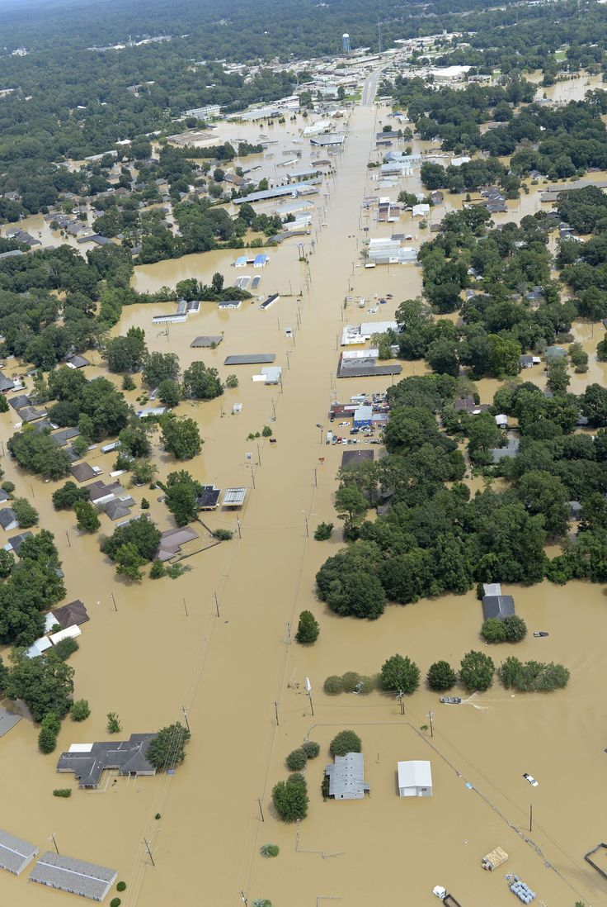
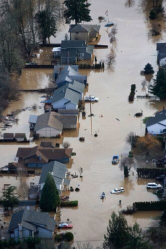

Цель проекта
Разработать инструмент для прогнозирования паводков и моделирования их последствий с использованием современных технологий обработки данных, моделирования и машинного обучения.Прогнозирование паводков:
• Построить модель для прогнозирования вероятности паводка в заданных географических точках.
• Учитывать метеорологические данные (температура, осадки, снеговой покров и др.).
• Учитывать гидрологические данные (уровень рек, скорость течения, объем водохранилищ и др.).
